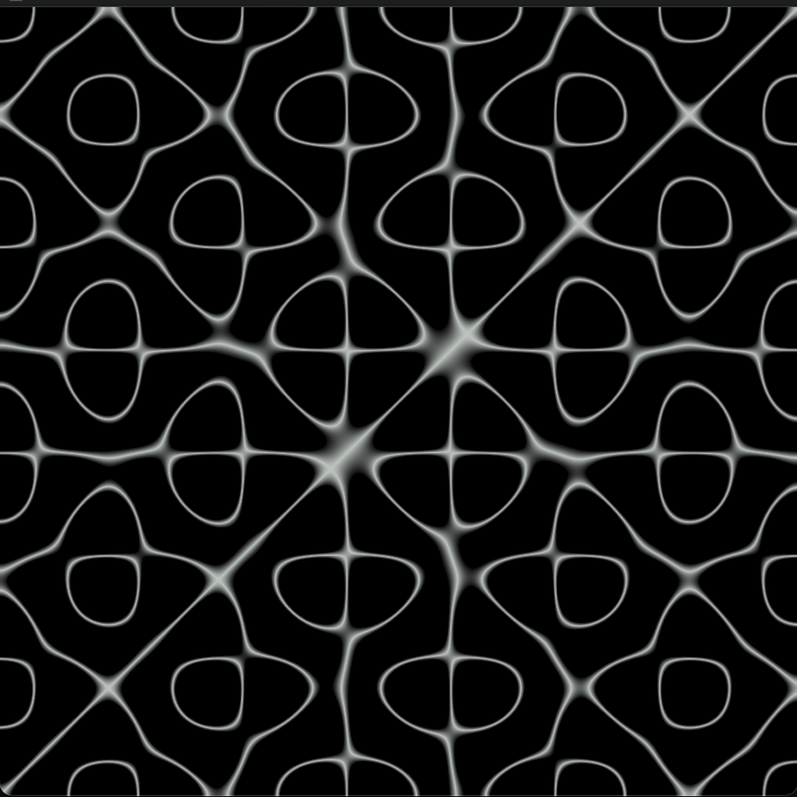
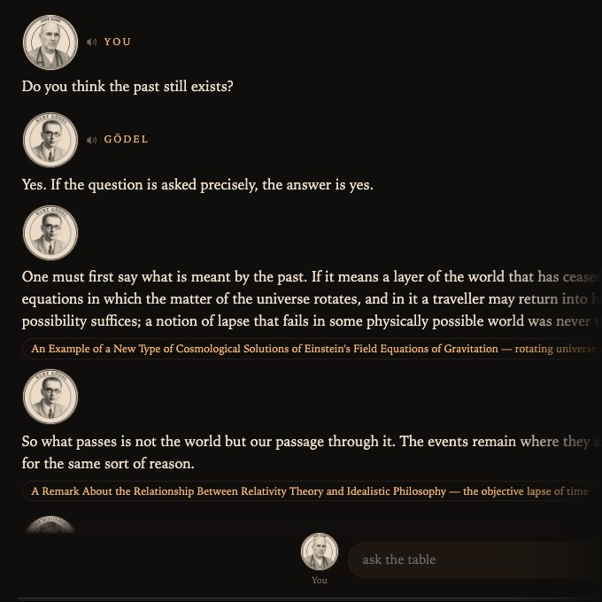

Apps
Tools made alongside the books.
Software I have built alongside the writing and the medicine: a drone synthesizer with live cymatics, a table of philosophers, and a clinical tool from my day job.

Drone Meditations
A four-oscillator drone synthesizer for meditation, with a live Chladni visualization: set the tones and watch the standing-wave geometry they make on the plate. Several tuning systems, binaural beats (with headphones), meditation journeys that move through scenes, and morphs between presets. Runs in the browser, on iPhone too.
open the app →
Web app · philosophySymposium
A table of philosophers who argue aloud, in their own rhythms, and may cite only what they actually wrote. You are the host: you choose who sits down, pose the question, and break in when you like. More than a hundred and fifty thinkers, across many traditions and centuries.
The philosophers' turns are generated by AI from their writings; they are not words the philosophers actually said. Citations are limited to works that exist. You can try five questions a day free, read aloud in your browser's own voices. After that it runs on your own Anthropic API key, kept in your browser, so your rounds are billed to you; voices from ElevenLabs are optional. The manual explains how a round works.
open the app →AdmitNote
Turns a spoken patient encounter into a structured history and physical for hospital medicine, with assessment and plan, codes and clinical calculators. Written by AI, reviewed by the physician. Built by a working hospitalist for the work he does every night.
admitnote.com →AdmitNote is also on the App Store. The philosophical dialogues on Symposium on YouTube grow out of the same idea; what those videos are.